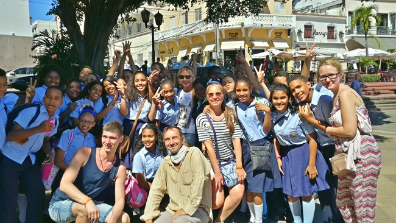
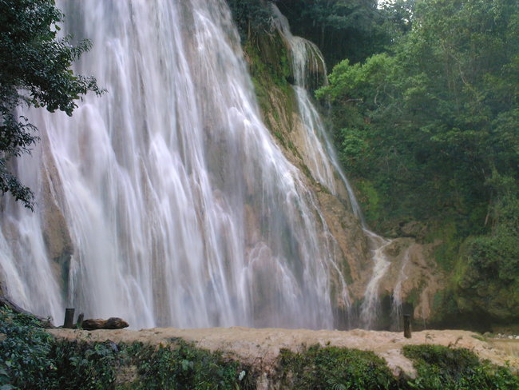
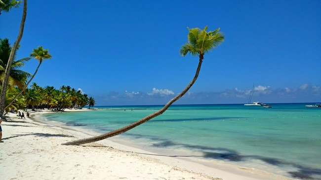

Экскурсии в Доминикане
Предложение для туристов, отдыхающих в Байяибе.
Если вам довелось попасть в отели в районе Байяибе и у вас есть желание отправиться на экскурсии не по ценам, предлагаемых вам вашим туроператором, то у вас есть теперь такая возможность.
Вам будет достаточно обратиться по WHATSAPP ДИАНА, написать ей, что вы пришли с сайта Николая - и вам будут предложены самые интересные и увлекательные экскурсии по доступным ценам, но, при этом, с высочайшим качеством сервиса!
У Дианы, помимо других экскурсий, вы сможете заказать экскурсию в столицу, в которой я буду вашим гидом. С русскими туристами я работаю только с Дианой.
ОБРАЩАЙТЕСЬ и вы не будете разочарованы!
Экскурсия в Санто-Доминго.
(История и культура первого города на американском континенте) В экскурсию входит "Трёхглазая пещера", Маяк Колумба, церковь Санта-Барбара, монастырь Сан-Франциско, Королевские дома, дом Диего Колумба, Национальный Пантеон, крепость Осама, Кафедральный собор, улица Лас Дамас (первая улица на американском континенте), обед в ресторане АТАРАСАНА (который во времена Диего Колумба был кухней), час свободного времени в конце программы, когда у вас будет возможность прогуляться по улице Эль Конде, посетить сувенирные магазины и, при желании, заглянуть в супермаркет НАСИОНАЛЬ, где вы сможете приобрести ром, кофе, какао по самым демократическим ценам.
Я буду вашим гидом на этой экскурсии.
Если вы арендуете автомобиль и захотите съездить в столицу самостоятельно, но вам нужен будет индивидуальный гид - обращайтесь: WHATSAPP НИКОЛАЙ.

Экскурсия на Саману.
(Разнообразие доминиканской природы)
Выезжаем из отеля в 5:10, около 7:20 утра мы уже будем подниматься на гору Редонда, где «небесные качели», гамаки и мётлы для самых потрясающих фотографий и просто великолепный вид на океан и горы. Там нас ждёт лёгкий завтрак - кофе и сэндвичи, а затем мы отправляемся в маленький порт в заливе Самана, откуда плывем на катамаране в городок Санта-Барбара.
Оттуда на сафари-грузовичке совершаем прогулку по полуострову Самана до ранчо в горах, где садимся на лошадей и идём к водопаду Эль Лимон.
(Если смущают лошади - можно пойти пешком, но дорога занимает минут 20-25, поэтому лошади нужны как транспортное средство, чтобы вы не устали.. Это низкорослая порода, они очень спокойные, не скачут, просто идут, каждую ведёт ваш индивидуальный погонщик).
У водопада проводим около часа,купаемся в озере.
Затем примерно в 14:30 мы обедаем в ресторане на берегу с видом на прекрасный остров Баккарди, куда и отправляемся сразу после обеда..
На пляже проводим примерно полтора часа, рядом находится несколько рифов, так что можно будет поснорклить и сфотографироваться с морскими звёздами!
И примерно в 5:30 вечера мы возвращаемся обратно к нашему автобусу, в отеле будете около 20:30, так что успеваете на ужин!

Экскурсия на Саону.
(Удивительный отдых на острове БАУНТИ)Новая программа на полдня: выезжаем на скоростной лодке с пляжа рядом с вашим отелем в 8:30, плывем на безлюдный пляж на Саоне, там проводим 2,5 часа, пока нет других туристов и не становится жарко, затем плывем в мангровые заросли в поисках морских черепах и потом ещё час проводим в натуральном бассейне среди морских звёзд.
В отель вы возвращаетесь также на пляж около 14:00 к обеду.
Включены алкогольные и безалкогольные напитки и фрукты.

Вы можете задать свои дополнительные вопросы на почту.Или связаться со мной через WhatsApp.